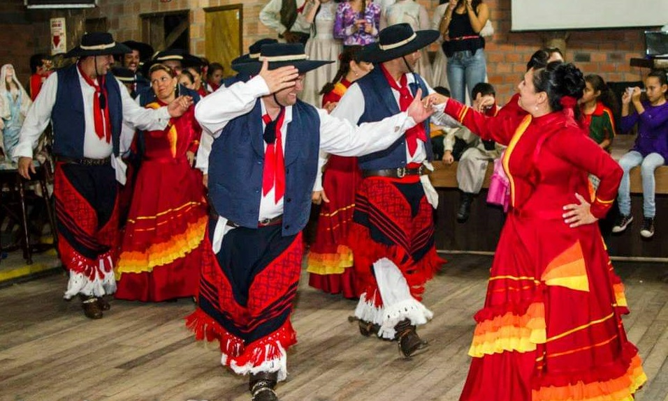
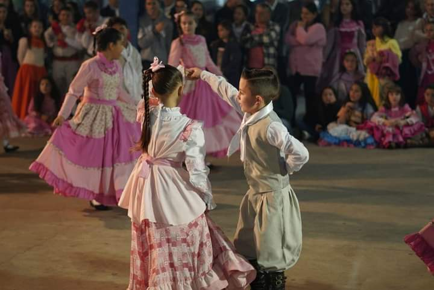
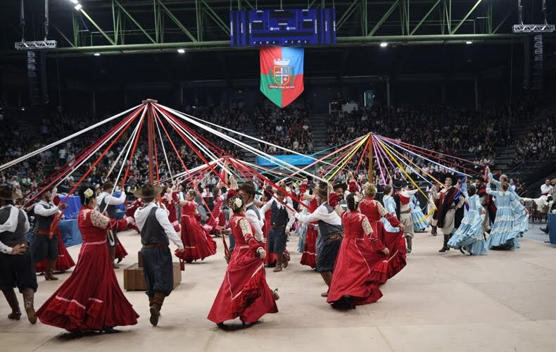
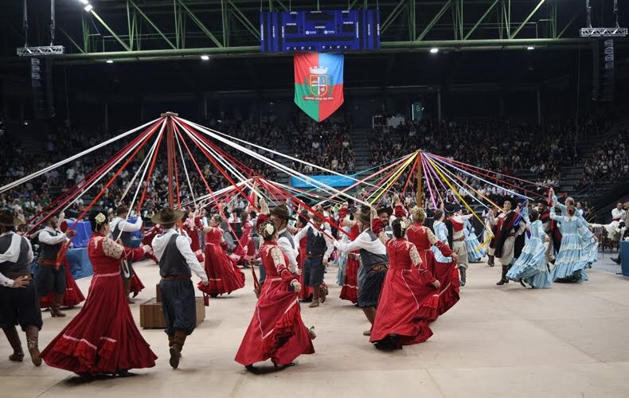

CTG LAÇO
O que é um CTG? Um CTG é um local de encontro para pessoas que desejam cultivar e vivenciar as tradições do Rio Grande do Sul. Através de diversas atividades artísticas, desportivas e campeiras, os CTGs unem famílias e mantêm vivo o legado cultural gaúcho. Nestes espaços, celebra-se os costumes através de eventos regulares.


 
